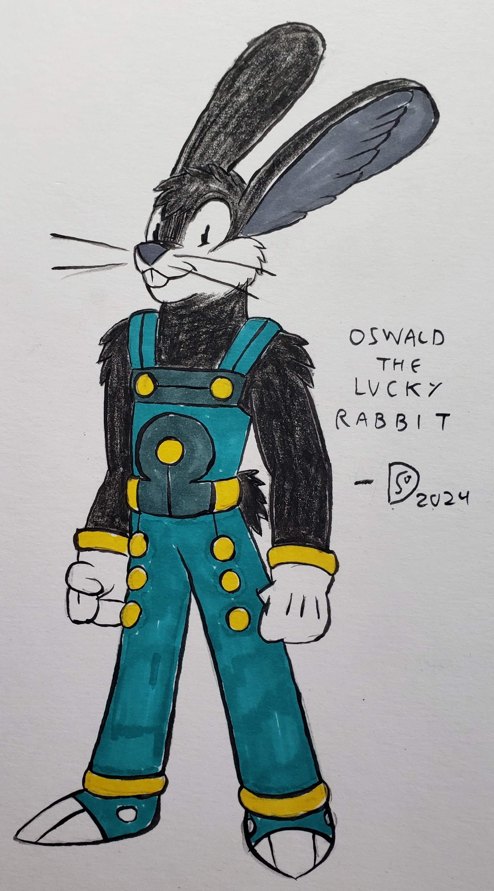

|  |
The protagonist of our story, Oswald, is a midnight-colored Lagophorm, or "Rabbit" as his kind were known in archaic times, skilled with both swords and laser-pistols. His last name, "Lukkenfote", provokes curiosity amongst many who meet him yet the highly learned of the Galaxy claim it means "Lucky Foot" in some primordial tongue, which might explain how he miraculously comes out on top in any calamity or disaster he gets himself into. His adventures have taken him across the breadth and width of the galaxy seeking lost treasures of the fallen arch-powers or crossing interstellar warlords bent on claiming half the galaxy as their own. His steel-gutted, wisecracking, and youthful resilience runs contrast against the image of the meek and timid Lagophorm held by many across the Galaxy. |